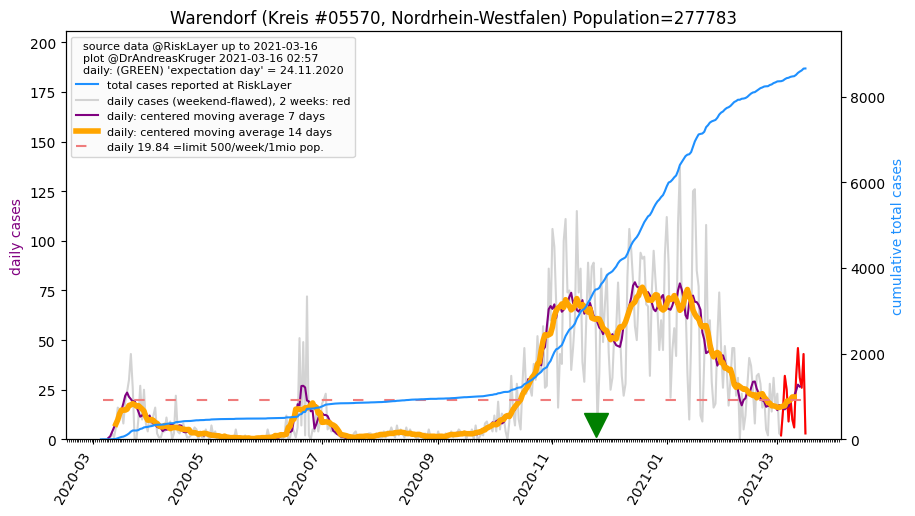
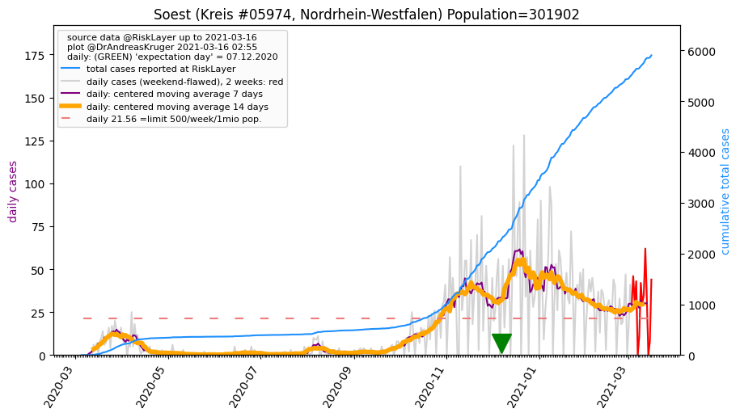
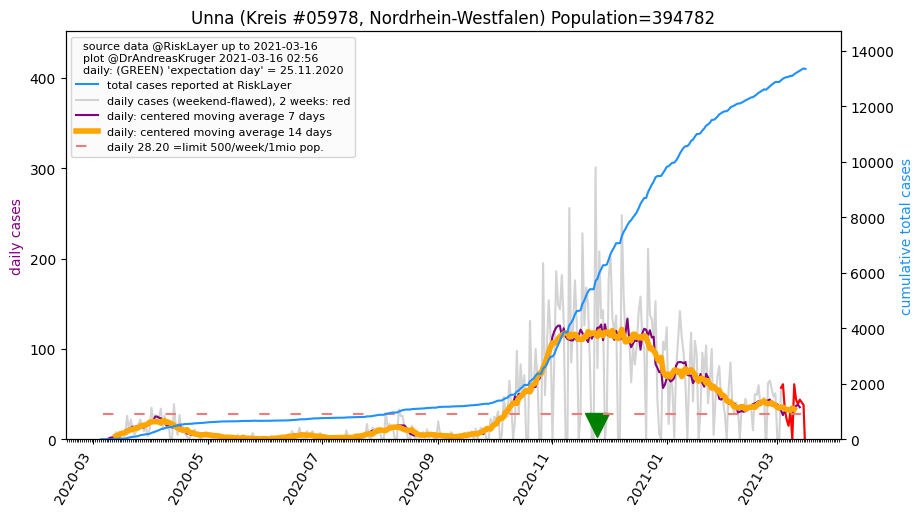
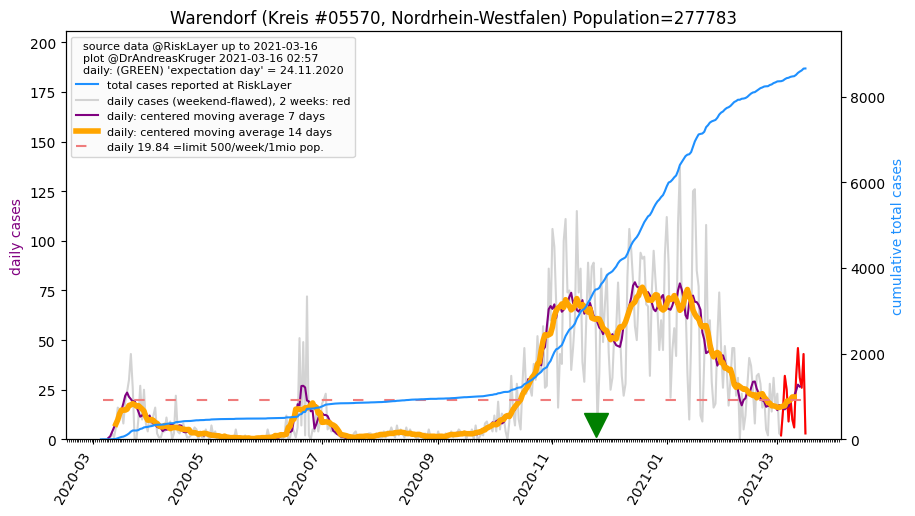
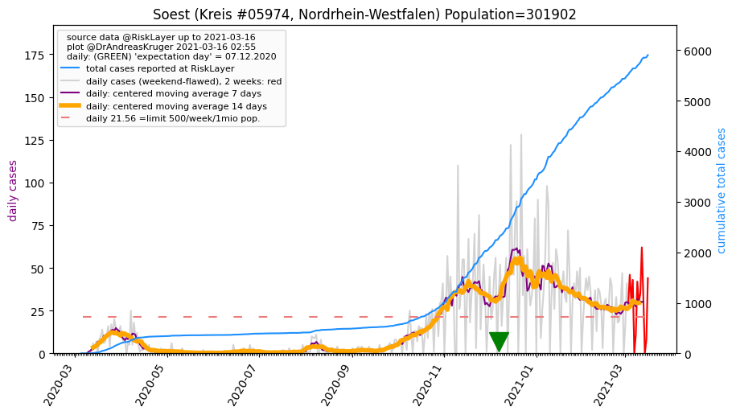
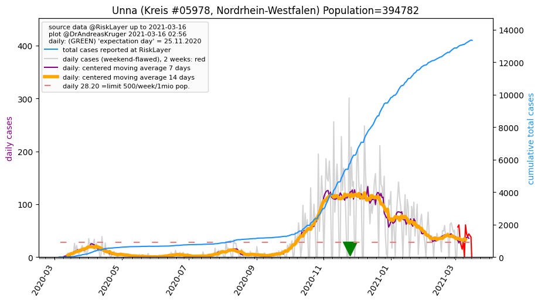

")
")
")


")
")
")
")
| Warendorf_KR (0.0 km)  |
Hamm_KS (24.6 km) |
Münster_KS (24.9 km) |
| Gütersloh_KR (27.9 km) |
Soest_KR (38.5 km)  |
Unna_KR (39.3 km)  |
| Coesfeld_KR (40.8 km) |
Bielefeld_KS (43.0 km) |
Osnabrück_KS (45.7 km) |
| Steinfurt_KR (46.0 km) |
All plots are regenerated with new data every night. Beware this temporary hotspot is an experimental page - it might get removed, so please do not link to it. Instead link to project http://tiny.cc/cov19de.